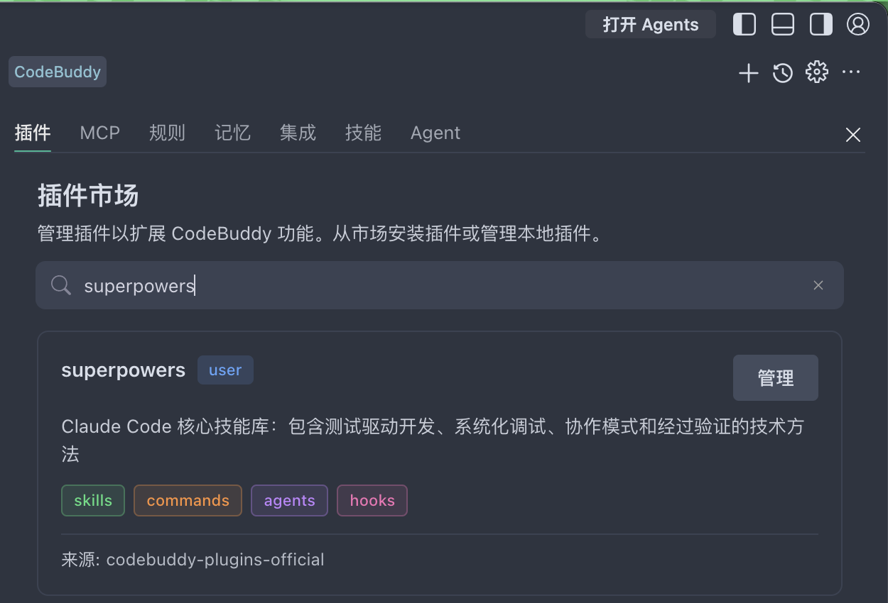
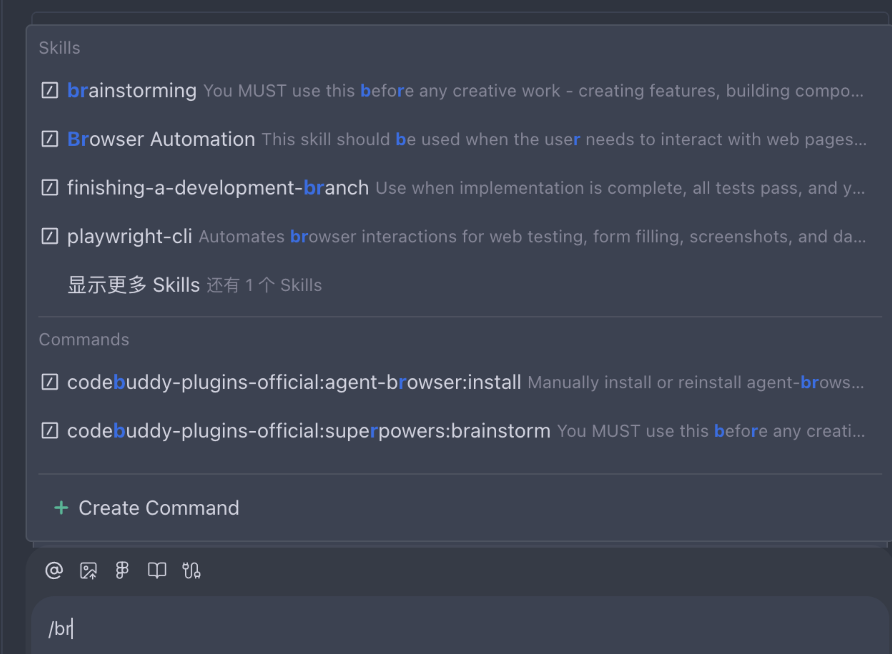

配置 Skills 2-3 分钟
什么是 Skills？
Skills（技能）是封装好的专业指令集，可以让 AI 在特定领域表现更出色。当你在对话中触发 Skill 时，其内容会被注入到 AI 的上下文中，引导 AI 按照专业流程执行任务。
案例所需的 Skills
1. Superpowers — 工程方法论技能包
插件市场搜索 superpowers，点击安装

验证：输入 /br 可看到 brainstorming 技能

Superpowers 提供一整套软件工程方法论技能，后台开发案例中会用到：
brainstorming
需求澄清与头脑风暴
test-driven-dev
TDD：先写测试再写实现
code-review
代码审查，确保质量
verification
完成前必须验证
2. OpenSpec — 规范驱动开发框架
通过 npm 全局安装
npm install -g @fission-ai/openspec@latest
验证安装：openspec --help
OpenSpec 的核心理念：在写代码之前，先与 AI 对齐需求规范。后台开发案例中的完整流程就是基于 OpenSpec 的「explore → propose → apply → archive」循环。
用自然语言描述需求，AI 生成变更提案，明确改什么、为什么改、影响范围
AI 生成详细技术规范（函数签名、数据结构、测试用例），确认后执行编码
实施完成后归档规范，作为项目文档沉淀，后续迭代可追溯决策上下文
3. frontend-design — 前端界面设计
插件市场搜索 frontend-design，点击安装。或从 GitHub 手动安装：
git clone https://github.com/anthropics/skills /tmp/anthropic-skills cp -r /tmp/anthropic-skills/skills/frontend-design ~/.codebuddy/skills/ rm -rf /tmp/anthropic-skills
frontend-design 让 AI 生成高质量、有设计感的前端界面，避免千篇一律的"AI 风"。全栈开发案例和本手册的页面风格都用了这个 Skill。
4. playwright-cli — 浏览器自动化测试 推荐
在 CodeBuddy 插件，搜索 playwright-cli，点击安装。
验证：在对话框输入 / 能看到 playwright 相关技能即表示安装成功。
playwright-cli 让 AI 可以驱动 Chromium/Firefox/WebKit 打开页面、点击、输入、截图，用于端到端（E2E）测试和 UI 自动化验证。全栈开发完成后用它做真实浏览器回归，非常方便。
页面导航
打开 URL、前进/后退、等待加载
交互模拟
点击、输入、下拉、拖拽
截图 & 录制
页面快照、视频录制，便于回归对比
断言校验
DOM 断言、网络请求拦截、控制台日志
更多
阅读更多：Skills 获取方式与自定义
以下内容介绍 Skills 的其他获取方式和自定义方法，可按需阅读。
获取方式一览
/plugin → 搜索一键安装
最快上手，社区最佳实践 Skill 包
.codebuddy/
离线环境或需要版本控制
npm install -g 安装开发框架
规范驱动开发等独立 CLI 工具
.codebuddy/skills/ 下自建 SKILL.md
定制团队规范、专属业务流程
Anthropic 官方 Skills 仓库（17 个 Skills）
anthropics/skills 是 Anthropic 官方发布的 Agent Skills 仓库（⭐ 124k），包含创意设计、开发技术、企业沟通、文档处理等多类技能。
git clone 整个仓库到 skills 目录 — 应只拷贝需要的 skill 文件夹。
git clone https://github.com/anthropics/skills /tmp/anthropic-skills # 拷贝需要的 skill（全局安装） cp -r /tmp/anthropic-skills/skills/pdf ~/.codebuddy/skills/ # 或项目级安装 cp -r /tmp/anthropic-skills/skills/pdf .codebuddy/skills/ rm -rf /tmp/anthropic-skills
手动创建自定义 Skill
在 .codebuddy/skills/ 下创建子文件夹，编写 SKILL.md（YAML 头部 + Markdown 正文）：
/ 即可触发对应 Skill。例如输入 /code-review 审查当前文件。